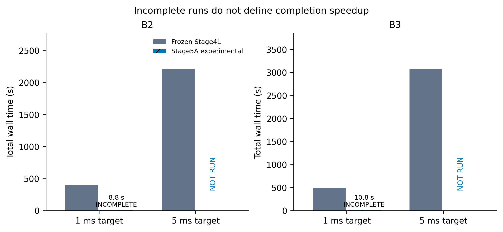
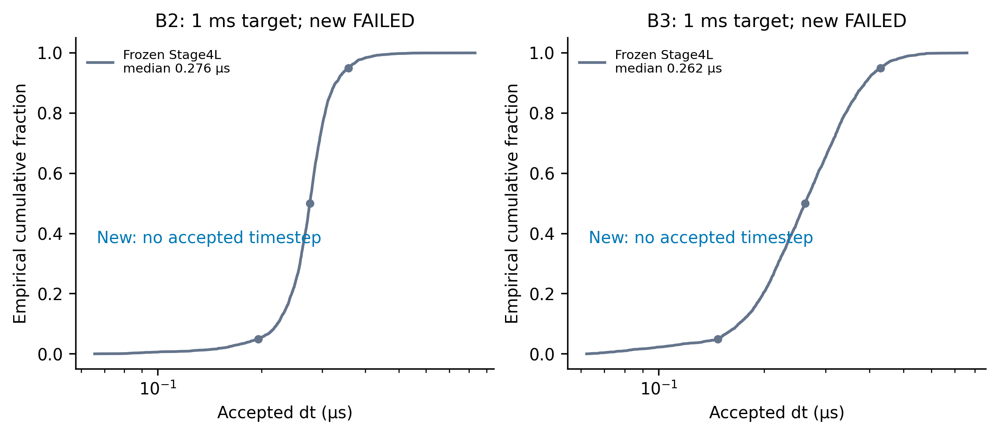
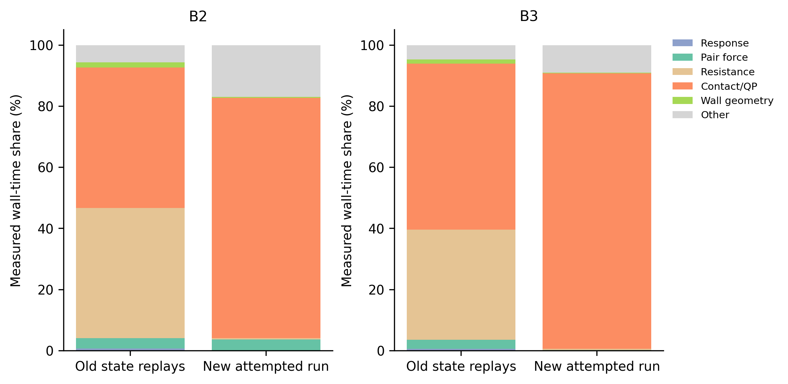
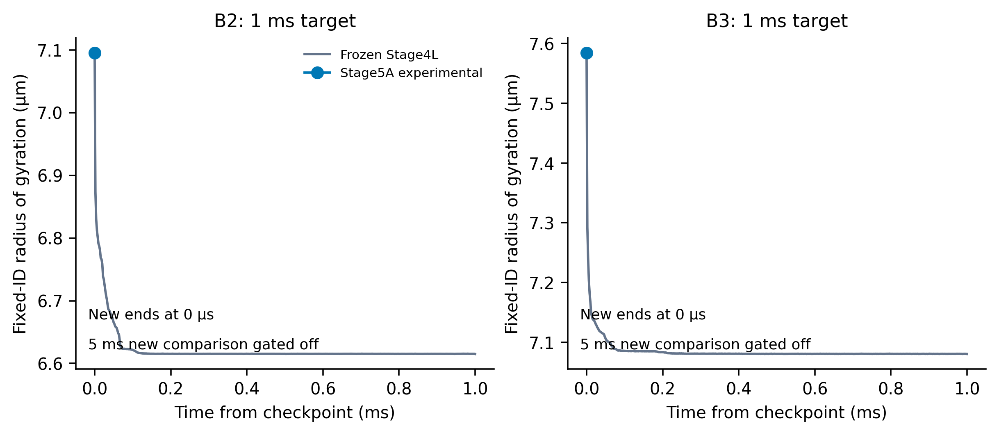
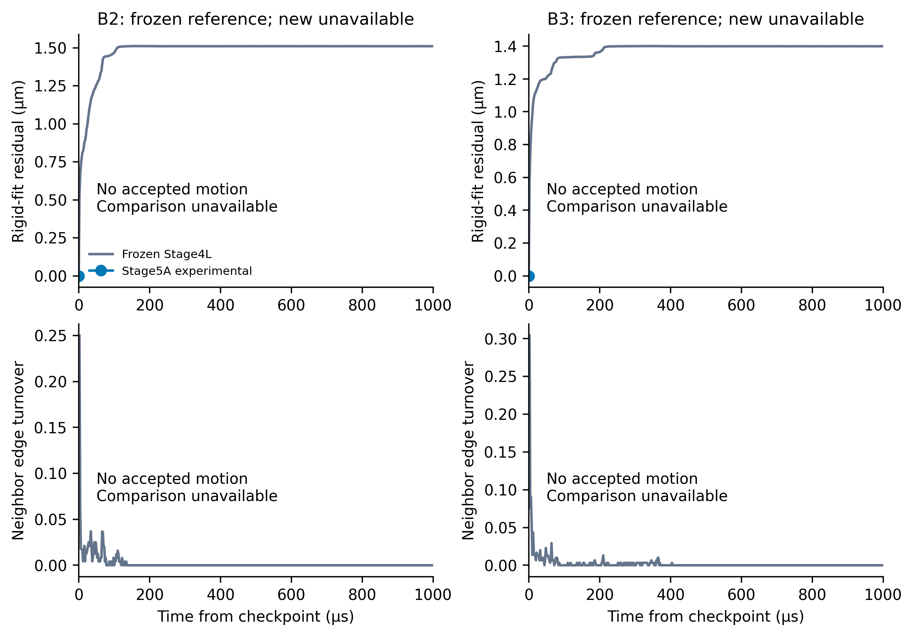
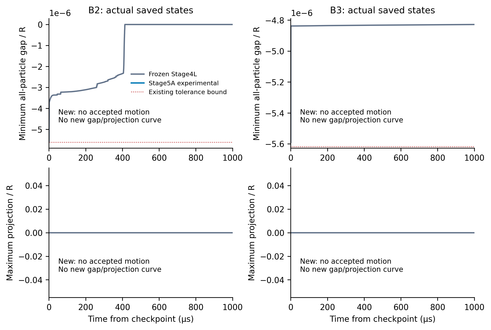
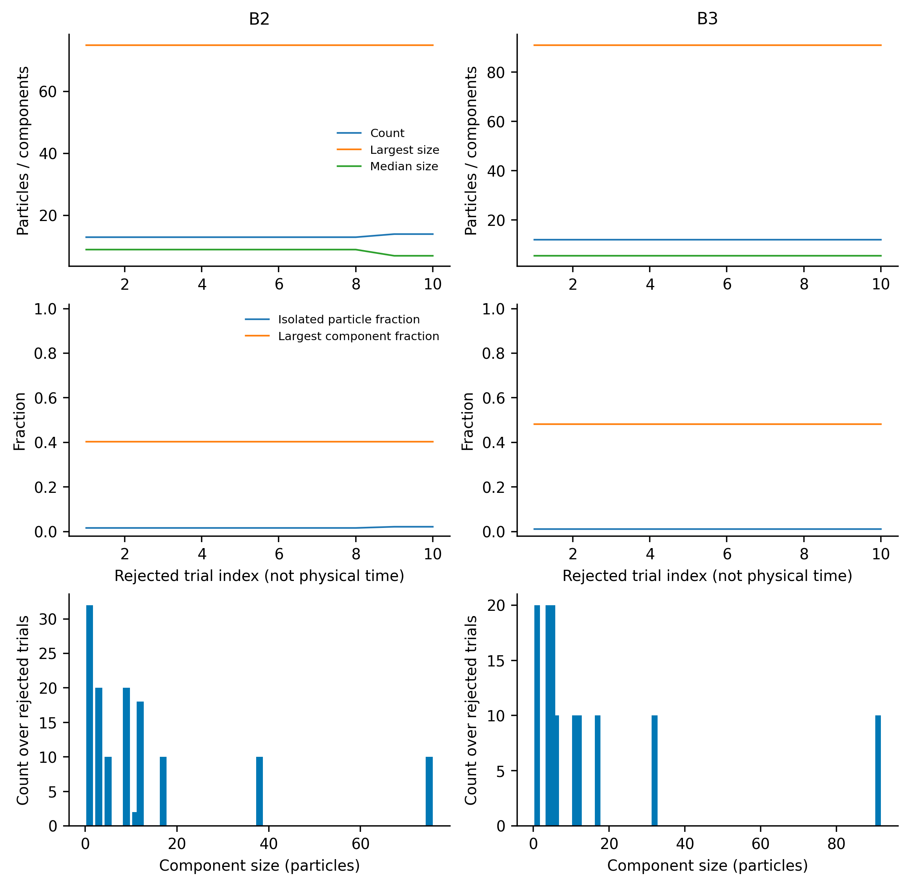
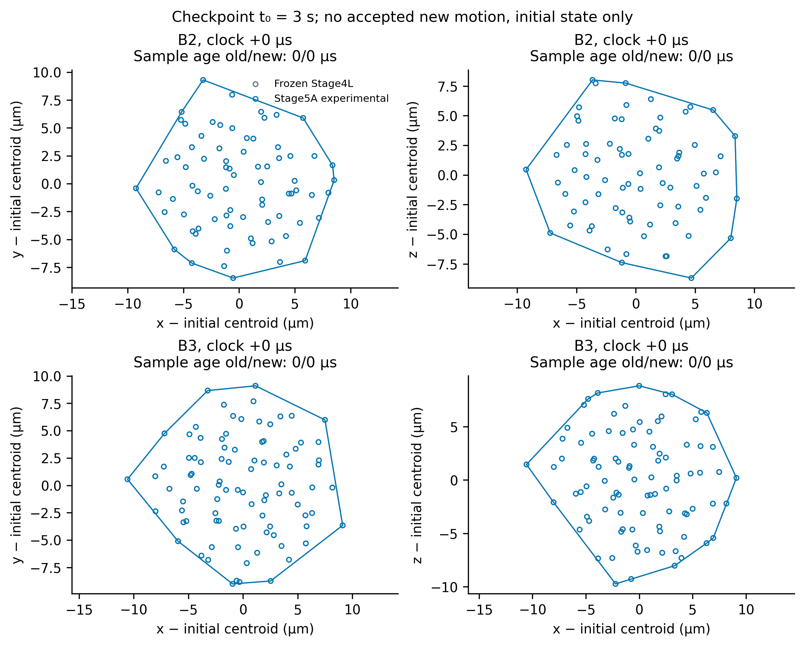

FAILED_WITH_EVIDENCE — numerical gate failed.
OSQP 1.1.3 is installed and the frozen-state tests pass. New 1 ms attempts accepted no motion; 5 ms and longer runs were not launched. Frozen Stage4L remains unchanged. Failed-attempt wall times are not completion speedups.
Development report · Machine-readable gate · Artifact hashes







